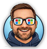

Jason Baxter’s Microsoft AI Field Guide · No. 4 · Microsoft 365
Start with what you need done. Tap an app to see when it fits, when to pick something else, who it reaches, and a tip to get more from it.
Quick answers — I want to…